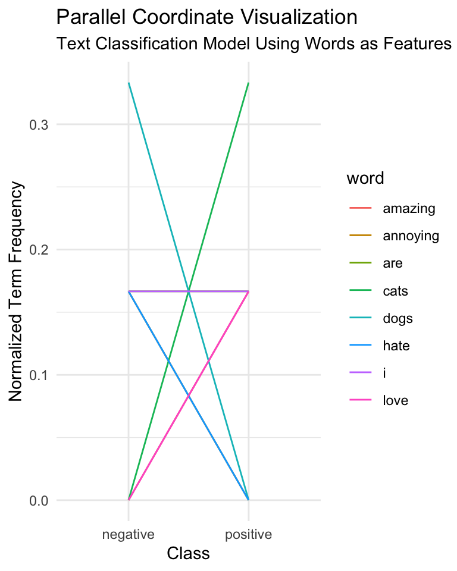
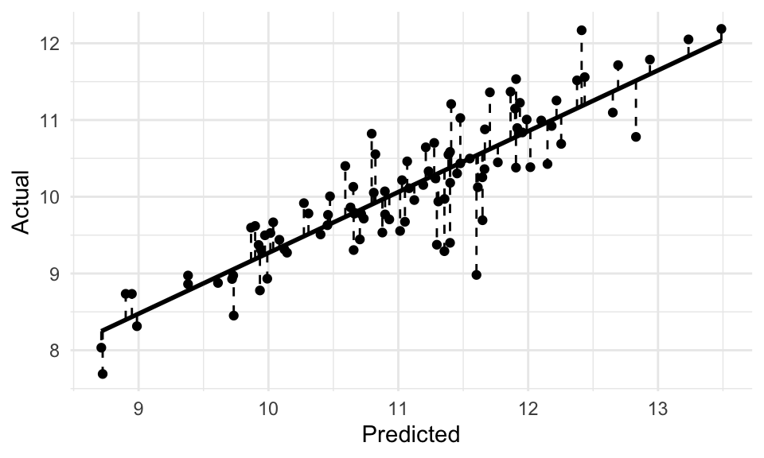

# Load packages
library(tidymodels) # modeling metapackage
library(textrecipes) # text preprocessing
library(janitor) # data inspection
# Set global options
tidymodels_prefer() # prefer tidymodels functions over other functions with the same name9 Prediction
Caution
Under development.
All models are wrong, but some are useful.
— George E.P. Box
In this chapter, I introduce supervised learning as an approach to data analysis, specifically focusing on its applications in text analysis. Supervised learning aims to establish a relationship between a target (or outcome) variable and a set of feature variables derived from text data. By leveraging this relationship, statistical generalizations (models) can be created to accurately predict values of the target variable based on the values of the feature variables. Throughout the chapter, we explore practical tasks and theoretical applications of statistical learning in text analysis. We also cover the standard workflow for building predictive models, testing and evaluating model performance, improving model accuracy, and interpreting and reporting findings.
9.1 Orientation
In this section, I introduce the concept of supervised learning and provide a brief overview of the workflow for building predictive models for text analysis. First we will discuss the research goals that are typically addressed using supervised learning, contrasting them with the goals of exploratory and inferential analysis. Next, we will discuss the approaches that are typically used to address these goals, including the types of data structures and algorithms that are used. Finally, we will discuss the workflow for building predictive models, including the steps for preparing data, training and testing models, and evaluating and reporting results.
9.1.1 Research goal
Predictive data analysis (PDA) is a powerful analysis method for linguists and other researchers interested in making predictions about new or future data based on patterns in existing data. As discussed in Section 3.2.2 and Section 4.4.1, PDA is a type of supervised learning, which means that it involves training a model on a labeled dataset where the input data and desired output are both provided. The model is able to make predictions or classifications based on the input data by learning the relationships between the input and output data. Supervised machine learning is an important tool for linguists studying language and communication, as it allows us to analyze language data to identify patterns or trends in language use, verify hypotheses, and prescribe actions.
In contrast to EDA, PDA does require that we have a particular goal in mind from the outset. This goal is typically to predict a particular outcome variable based on a set of predictor variables. The status of predictor variables, however, depends on the research goal. In some cases, the predictor variables are mutable, meaning that they can be changed to see how they affect the outcome. This points to the inductive, exploratory application of PDA which can aid in generating new insight and questions. In other cases, the predictor variables may be pre-defined. In this light, PDA serves a deductive purpose, as we are testing a hypothesis about the relationship between the predictor variables and the outcome variable.
9.1.2 Approach
… There are two main types of supervised machine learning algorithms: classification, which is used to predict a categorical outcome such as the genre of a text, and regression, which is used to predict a continuous outcome such as the sentiment of a text, syntactic complexity score, test score, etc.
- Supervised learning
- Classification
- Categorical outcome variable
- Regression
- Continuous outcome variable
- Classification
…
It is important to be clear from the outset what the purpose of the analysis is, as this will determine the approach that is taken. For exploratory-oriented prediction, the approach to feature selection, engineering, and extraction will be more open-ended, much like unsupervised learning, with the caveat that an outcome variable is defined. In this approach, the researcher is also free to re-define the features to see how they affect the prediction model.
For hypothesis-driven prediction, the approach to feature selection, engineering, and extraction will be more focused, much like inferential analysis. The relationship between outcome and predictor variables is the focus of the analysis, and the researcher is not free to re-define the features.
In either approach, predictive data analysis incorporates a validation step to ensure that the model is robust. To validate the model, the data is split into training and testing sets. The training set is used to train the model, and the testing set is used to evaluate the model’s performance. The testing set is reserved and not used to train the model, so that the model’s performance can be evaluated on data that it has not seen before. In some cases, the data is split into three sets: training, validation, and testing. The validation set is used to evaluate the model’s performance during the training phase, and the testing set is used to evaluate the model’s performance after the training phase.
Model training is the next step towards building a predictive model. In this step, an algorithm is used to train the model on the training data. The choice of algorithm first and foremost depends on the nature of the outcome variable. If categorical, classification algorithms such as logistic regression, decision trees, or Naive Bayes are used. If continuous, regression algorithms such as linear regression, decision trees, or neural networks are natural choices. The nature of the predictor variables also plays a role in the choice of algorithm.
. For regression, the most common algorithms are linear regression, decision trees, and neural networks. The choice of algorithm also depends on the nature of the predictor variables. For example, if the predictor variables are categorical, then a decision tree algorithm may be a good choice. If the predictor variables are continuous, then a linear regression algorithm may be a good choice. If the predictor variables are text, then a Naive Bayes algorithm may be a good choice.
For all applications of PDA the interpretation of the prediction model includes some metric or metrics of accuracy comparing the extent to which the models predictions and the actual targets align. The standard form for evaluating a model’s performance differs between classification models (naive bayes) and regression models (linear regression).
For classification models, a cross-tabulation of the predicted and actual classes results in a contingency table which can be used to calculate accuracy which is the sum of all the correctly predicted observations divided by the total number of observations in the test set. In addition to accuracy, there are various other measures which aim to assess a model’s performance to gain more insight into the potential over- or under-generalization of the model (Precision and Recall).
For regression models, differences between predicted and actual values can be assessed using a coefficient of correlation (typically \(R^2\)). Again, more fine-grained detail about the model’s performance can be calculated (Root Mean Square Error).
Another component worthy of consideration when evaluating a model’s performance is how do we determine if the performance is actually good. One the one hand, accuracy rates into the 90+% range on the test set is usually a good sign that the model is performing well. No model will perform with perfect accuracy, however, and depending on the goal of the research particular error patterns may be more important, and problematic, than the overall prediction accuracy.
On the other hand, another eventuality is that the model performs very well on the training set but that on the test set (new data) the performance drops significantly. This is a sign that during the training phrase the machine learning algorithm learned nuances in the data (‘noise’) that obscure the signal pattern to be learned. This problem is called overfitting and to avoid it researchers iteratively run evaluations of the training data using resampling.
The two most common resampling methods are bootstrapping (resampling with replacement) and cross-validation (resampling without replacement). The performance of these multiple models are summarized and the error between them is assessed. The goal is to minimize the performance differences between the models while maximizing the overall performance. These measures go a long way to avoiding overfitting and therefore maximizing the chance that the training phase will produce a model which is robust.
- Identify …
- Inspect …
- Interrogate …
- Interpret …
- (Optional) Iterate …
Prerequisites: - A working research question or hypothesis - A dataset which aligns with the research question or hypothesis in terms of its sampling frame and the variables it contains or can be derived from the text and a target variable to be predicted. - A set of preliminary features to be derived from the text that are used to predict the target variable
9.2 Analysis
- Add a visual representation of the workflow? Or too much?
The steps of this analysis are as follows:
| Step | Name | Description |
|---|---|---|
| 1 | Create corpus | Create a corpus of texts with an outcome variable and a feature variable representing the text |
| 2 | Split data | Split the data into training and testing sets |
| 3 | Create recipe | Define a recipe to specify how to preprocess and engineer the feature variable, as well as the outcome variable |
| 4 | Create model specification | Specify the model and engine to use in a model specification |
| 5 | Create workflow | Create a workflow that combines the recipe and model specification into a pipeline |
| 6 | Fit workflow | Fit the workflow to the training data and evaluate its performance |
| 7 | Improve model | Explore ways to improve the model by assessing its performance and making changes to features, models, or hyperparameters |
| 8 | Evaluate final model | Evaluate the final model’s performance on the testing data and analyze predictions, errors, and feature importance |
We will be using the tidymodels framework to perform this analysis. tidymodels is a metapackage, much like tidyverse, that provides a consistent interface for modeling and machine learning. The main packages unique to tidymodels are parsnip, dials, and workflows. parsnip provides a consistent interface for specifying models. dials provides a consistent interface for tuning hyperparameters. workflows provides a consistent interface for modeling pipelines. Since we are using text data, we will also be using the textrecipes package which provides a consistent interface for preprocessing text data.
After we have a baseline model, we will compare it to the null model to see if our model is better than the null model. Depending on the results, we will either move on to a more complex model or we will stop here. A more complex model may include changing the features, using a different model, or tuning the hyperparameters of the model. We will then evaluate the final model on the testing data to see how well it generalizes to new data. We will also analyze the predictions, errors, and feature importance of the final model.
9.2.1 Text classification
The goal of this analysis is to classify texts as either native or learner. This is a binary classification problem. As a first pass we will use a bag-of-words approach to classify texts where words are the features and the classes are native and learner.
Simple, computationally efficient, and interpretable models are preferred over complex, computationally expensive, and uninterpretable models, all things being equal. Only if the performance of the simple model is not good enough should we move on to a more complex model. With this end mind, we will start with a simple logistic regression model to see how well we can classify texts.
Let’s start by loading the packages we will need for this analysis and load the datasets we will be using.
We will follow the steps in Table 9.1 to peform this analysis. First up is preparing the corpus data. In Example 9.1, we will read in the two datasets, combine them into a single dataset, and create a corpus of texts with an outcome variable and a feature variable representing the text. Note that the outcome variable will be converted to a factor variable in preparation for modeling.
Example 9.1
# Read in the datasets
cedel2_learners_df <-
read_csv("../data/cedel2/cedel2_learners.csv") |> # read in the learners dataset
mutate(outcome = "learner") |> # create an outcome variable
select(outcome, text) # select the text column
cedel2_natives_df <-
read_csv("../data/cedel2/cedel2_natives.csv") |> # read in the natives dataset
mutate(outcome = "native") |> # create an outcome variable
select(outcome, text) # select the text column
# Combine the datasets by row
cedel2_cls_df <-
bind_rows( # combine the datasets by row
cedel2_learners_df,
cedel2_natives_df
) |>
mutate(outcome = factor(outcome)) # convert to a factor variable
# Preview
cedel2_cls_df |> glimpse()> Rows: 2,957
> Columns: 2
> $ outcome <fct> learner, learner, learner, learner, learner, learner, learner,…
> $ text <chr> "Yo vivo es Alanta, Georgia. Atlanta es muy grande ciudad. Mi …The results of Example 9.1 show that we have two variables, one for the outcome and the other for the text –from which we will derive our features for the classification model. This data frame has 2957 observations. To view the distribution of the outcome variable between the two levels we can use the tabyl() function from the janitor package, as seen in Example 9.2.
Example 9.2
# View the distribution of the outcome variable
cedel2_cls_df |>
tabyl(outcome) |>
adorn_pct_formatting(digits = 1)> outcome n percent
> learner 1906 64.5%
> native 1051 35.5%So a little more than two-thirds of the texts are from learners. It is important to gauge the distribution of the outcome variable to see if it is balanced or imbalanced. The classes need not be perfectly balanced, but if they are wildly imbalanced it can cause problems for the model.
Moving on two step 2, we will split the data into training and testing sets. A typical approach in supervised machine learning is to allocate around 75-80% of the data to the training set and the remaining 20-25% to the testing set, depending on the number of observations. We have 2957 observations in our data set, so we can allocate 80% of the data to the training set and 20% of the data to the testing set.
We will use the initial_split() function from the rsample package to split the data into training and testing sets. The initial_split() function takes a data frame and a proportion and returns a split object which contains the training and testing sets. We will use the strata argument to stratify the data by the outcome variable. This will ensure that the training and testing sets have the same proportion of native and learner texts. The code is seen in Example 9.3.
Example 9.3
# Split the data into training and testing sets
cedel2_cls_split <-
initial_split(
data = cedel2_cls_df,
prop = 0.8,
strata = outcome
)
# Create training set
cedel2_cls_train <- training(cedel2_cls_split) # 80% of data
# Create testing set
cedel2_cls_test <- testing(cedel2_cls_split) # 20% of dataA confirmation of the distribution of the data across the training and testing sets as well as a break down of the outcome variable can be seen in Example 9.4.
Example 9.4
# View the distribution of the outcome variables
cedel2_cls_train |>
tabyl(outcome) |>
adorn_totals("row") |>
adorn_pct_formatting(digits = 1)> outcome n percent
> learner 1524 64.5%
> native 840 35.5%
> Total 2364 100.0%cedel2_cls_test |>
tabyl(outcome) |>
adorn_totals("row") |>
adorn_pct_formatting(digits = 1)> outcome n percent
> learner 382 64.4%
> native 211 35.6%
> Total 593 100.0%We can see that the split was successful. The training and testing sets have very similiar proportion of native and learner texts.
We are now ready to create a ‘recipe’, step 3 in our analysis. A recipe is a set of instructions or blueprint which specify the outcome variable and the feature variable and determines how to preprocess and engineer the feature variables.
We will use the recipe() function from the recipes package to create the recipe. The recipe() function minimally takes a formula and a data frame and returns a recipe object. The formula specifies the outcome variable (\(y\)) and the feature variable(s) (\(x_1 .. x_n\)). For example y ~ x can be read as “y is a function of x”. In our particular case, we will use the formula outcome ~ text to specify that the outcome variable is the outcome variable and the feature variable is the text variable. The code is seen in Example 9.5.
Example 9.5
# Create a recipe
cedel2_cls_rec <-
recipe(
outcome ~ text,
data = cedel2_cls_train
)
# Preview
cedel2_cls_recThe recipe object at this moment contains just one instruction, what the variables are and what their relationship is.
The recipes package provides a wide range of step_*() functions which can be applied to the recipe to specify how to engineer the variables in our recipe call. These include functions to scale (e.g step_center(), step_scale(), etc.) and transform (e.g. step_log(), step_pca(), etc.) numeric variables, and functions to encode (e.g. step_dummy(), step_labelencode(), etc.) categorical variables.
These step functions are great when we have selected the variables we want to use in our model and we want to engineer them in a particular way. In our case, however, we need to derive features from the text in the text column of datasets before we engineer them. To ease this process, the textrecipes package provides a number of step functions for preprocessing text data. These include functions to tokenize (e.g. step_tokenize()), remove stop words (e.g. step_stopwords()), and to derive meta-features (e.g. step_lemma(), step_stem(), etc.) 1. Furthermore, there are functions to engineer features in ways that are particularly relevant to text data, such as feature weights (e.g. step_tf(), step_tfidf(), etc.) and token filtering (e.g. step_tokenfilter()).
9.2.2 Text regression
9.3 Summary
- Supervised machine learning is an active area of research in linguistics with numerous applications and opportunities for further exploration.
Interpret
To either evaluate the training or testing set, the model is used to make predictions on the data in the set. The predictions are then compared to the actual values of the target variable in the set to evaluate the model’s performance. So how is the model’s performance evaluated?
Classification
For classification, there are a number of metrics that can be used to evaluate the performance of a model, including accuracy, precision, recall, and F1 score. To understand these measures it is helpful to consider a confusion matrix, which is a table that describes the performance of a classification model on data for which the true values are known. The confusion matrix is a two-by-two matrix that shows the number of true positives (TP), false positives (FP), true negatives (TN), and false negatives (FN), as seen in Table 9.2.
| Predicted positive | Predicted negative | |
|---|---|---|
| Actual positive | TP | FP |
| Actual negative | FN | TN |
Now let’s fill this confusion matrix with hypothetical values, as seen in Table 9.3 to see how the metrics are calculated.
| Predicted positive | Predicted negative | |
|---|---|---|
| Actual positive | 100 | 10 |
| Actual negative | 20 | 50 |
- Accuracy is defined as the proportion of correct predictions made by the model.
\[ \text{Accuracy} = \frac{\text{Number of correct predictions}}{\text{Total number of predictions}} \tag{9.1}\]
The number of correct predictions is the sum of true positives and true negatives. So in our case this is 100 + 50 = 150. The total number of predictions is the sum of all four cells in the confusion matrix, so in our case this is 100 + 10 + 20 + 50 = 180. So the accuracy of our hypothetical model is 150/180 = 0.833.
- Precision is defined as the proportion of positive predictions that are correct.
\[ \text{Precision} = \frac{\text{Number of true positives}}{\text{Number of true positives + false positives}} \tag{9.2}\]
- Recall is defined as the proportion of actual positives that are correctly identified.
\[ \text{Recall} = \frac{\text{Number of true positives}}{\text{Number of true positives + false negatives}} \tag{9.3}\]
- The F1 score is the harmonic mean of precision and recall.
\[ \text{F1 score} = \frac{2 \times \text{Precision} \times \text{Recall}}{\text{Precision} + \text{Recall}} \tag{9.4}\]
Area under the curve (AUC) is the area under the ROC (Receiver Operating Characteristic) curve, which is a graph of true positives (TPR) and false positives (FPR). The AUC is a measure of the model’s performance across all possible classification thresholds. The AUC is a number between 0 and 1, where 0.5 represents a model that is no better than random guessing, and 1 represents a perfect model.
Feature importance
- parallel coordinate visualization
In a supervised text classification task, you can use parallel coordinate plots to visualize the distribution of class labels across different feature dimensions. This can help identify which features are most informative for distinguishing between classes and inform feature selection or dimensionality reduction techniques.
# Libraries
library(tidyverse)
library(tidytext)
# Faux data
data <- data.frame(
text = c("I love cats", "Cats are amazing", "I hate dogs", "Dogs are annoying"),
class = c("positive", "positive", "negative", "negative")
)
# Tokenize data
tokenized_data <- data %>%
unnest_tokens(word, text) %>%
count(class, word) %>%
ungroup() %>%
spread(class, n, fill = 0)
# Normalize the term frequencies
normalized_data <-
tokenized_data %>%
mutate(
positive = positive / sum(positive),
negative = negative / sum(negative)
) %>%
gather(class, frequency, -word)
# Generate the parallel coordinate plot
ggplot(normalized_data, aes(x = class, y = frequency, group = word, color = word)) +
geom_line() +
theme_minimal() +
labs(
title = "Parallel Coordinate Visualization",
subtitle = "Text Classification Model Using Words as Features",
x = "Class",
y = "Normalized Term Frequency"
)
We can look at the parallel coordinate plot in Figure 9.1 to see that the words “cats” and “love” are more common in the positive class, while the words “dogs” and “hate” are more common in the negative class. This suggests that these words are good features for distinguishing between the two classes.
Regression
For regression, the most common metric is the root mean squared error (RMSE). The RMSE is the square root of the mean of the squared differences between the predicted values and the actual values. The lower the RMSE, the better the model fits the data.
Supervised machine learning algorithms for regression are typically evaluated using measures of error such as mean squared error (MSE), root mean squared error (RMSE), and mean absolute error (MAE). MSE is used to measure the average of the squares of the errors, MAE is the average of the absolute differences between the prediction and the actual data, and RMSE is the square root of the mean squared error. For each of these statistics, the lower the value, the better the model fits the data. The differences between these statistics are shown in Table 9.4.
| error | formula | description |
|---|---|---|
| MSE | $$\frac{1}{n} \sum_{i=1}^{n} (y_i - \hat{y}_i)^2$$ | The average of the squared differences between the prediction and the actual data |
| RMSE | $$\sqrt{\frac{1}{n} \sum_{i=1}^{n} (y_i - \hat{y}_i)^2}$$ | The square root of the mean squared error |
| MAE | $$\frac{1}{n} \sum_{i=1}^{n} \vert y_i - \hat{y}_i \vert$$ | The average of the absolute differences between the prediction and the actual data |
The main advantages of using MSE, RMSE, and MAE are that they are all on the same scale as the dependent variable, and they are all differentiable, which makes them useful for optimization algorithms. MSE is the most commonly used metric for regression, but RMSE and MAE are also used. MSE is more sensitive to outliers than RMSE and MAE, so it is more useful when the data has outliers. RMSE and MAE are more useful when the data does not have outliers.
Plot the actual and predicted values to see how well the model fits the data.

We can now apply our error metrics to the results data to see how well the model fits the data.
#|
# Calculate the error metrics for the `results` data
results |>
mutate(error = actual - predicted) |> # calculate the error
summarise(
mse = mean(error^2), # calculate the MSE
rmse = sqrt(mse), # calculate the RMSE
mae = mean(abs(error)), # calculate the MAE
n = n()
) |> # calculate the number of observations
mutate(
mse = mse * 1 / n, # multiply by 1/n to get the MSE for n observations
rmse = rmse * 1 / n, # multiply by 1/n to get the RMSE for n observations
mae = mae * 1 / n
) # multiply by 1/n to get the MAE for n observations> # A tibble: 1 × 4
> mse rmse mae n
> <dbl> <dbl> <dbl> <int>
> 1 0.0113 0.0106 0.00947 100Formula for calculating the MSE:
\[ \text{MSE} = \frac{1}{n} \sum_{i=1}^{n} (y_i - \hat{y}_i)^2 \tag{9.5}\]
So we can implement this in R subtracting the actual values from the predicted values, squaring the differences, then taking the mean of the all the squared differences, and finally multiplying by \(1/n\) to get the MSE for \(n\) observations.
results |> # use the `results` data
mutate(error = actual - predicted) |> # calculate the error
summarise(
mse = mean(error^2), # calculate the MSE
n = n()
) |> # calculate the number of observations
mutate(mse = mse * 1 / n) |> # multiply by 1/n to get the MSE for n observations
pull(mse) # pull the MSE value out of the tibble> [1] 0.0113Formula for calculating the RMSE:
\[ \text{RMSE} = \sqrt{\frac{1}{n} \sum_{i=1}^{n} (y_i - \hat{y}_i)^2} \tag{9.6}\]
9.4 Analysis
Recap and introduction to the structure of the analysis subsection.
- Introduce an algorithm
- Build a model
- Preprocessing (tokenization, lemmatization, etc.)
- Feature extraction (TF-IDF, word embeddings, etc.)
- Model selection (logistic regression, SVM, etc.)
- Model training
- Evaluate (and adjust) the model on the training data
- Cross-validation
- Evaluation metrics
- Compare to null and/ or other models
- Adjust the model (hyperparameters, regularization, etc.) as necessary
- Evaluate the model on the test data
- Evaluation metrics
- Evaluate feature importance
- Evaluate the features of correct and incorrect predictions
9.4.1 Classification
We will first start with classification which is by far the most common text analysis approach in supervised machine learning. Again, classification is the task of predicting a categorical variable from a set of features. The features we use will be derived from the text but can take many forms. For example, we can use the raw text, the word counts, the TF-IDF values, or the word embeddings. We also will take into account the number of features we use. There is a trade-off, however, to the number of features: a) the more features we use, the more complex the model will be, and the more likely it will overfit the training data and b) the less features we use, the less complex the model will be, and the more likely it will underfit the training data. To find the optimal number of features we can use a technique called cross-validation.
The most common text classification algorithms are logistic regression, k-nearest neighbors, Naive Bayes, and support vector machines. We will start with logistic regression and k-nearest neighbors as they are the simplest to understand and implement. We will then move on to Naive Bayes and support vector machines as they are more complex and require more explanation.
Building a null model for classification we simply predict the most common class in the training data. This makes sense as we have seen earlier, with categorical data the central tendency is estimated by the mode –i.e. the most common value.
K-nearest neighbors
K-nearest neighbors is a simple supervised machine learning method for classification. It is a non-parametric method, which means that it does not make any assumptions about the underlying distribution of the data. It is a lazy learning method, which means that it does not learn a discriminant function from the training data but instead stores the training data. It is a distance-based method, which means that it uses a distance metric to find the \(k\) nearest neighbors to a new observation. It is a simple method, which means that it is easy to understand and implement.
Logistic regression
Logistic regression is a supervised machine learning method for classification. It is a parametric method, which means that it makes assumptions about the underlying distribution of the data. It is an iterative method, which means that it uses an iterative algorithm to find the optimal parameters. To avoid overfitting it uses regularization such as ridge regression or lasso regression. These regularization methods penalize the model for having too many parameters. However, how does one know what the optimal number of parameters is? This is where cross-validation comes in.
Naive Bayes
Naive Bayes is a supervised machine learning method for classification. It is a parametric method, which means that it makes assumptions about the underlying distribution of the data. It is a probabilistic method, which means that it uses Bayes’ theorem to calculate the probability of a class given the predictor variables. It is a generative method, which means that it learns the joint probability distribution of the predictor variables and the outcome variable. It is a simple method, which means that it makes the assumption that the predictor variables are independent of each other. This assumption is called the naive assumption. Now this assumption does not theoretically hold for language data as words are not independent of each other. However, in practice, Naive Bayes’ models still perform well on many text classification tasks.
Decision trees
Decision trees for text classification are a supervised machine learning method for classification. They are a non-parametric method, which means that they do not make any assumptions about the underlying distribution of the data. They are a greedy method, which means that they use a greedy algorithm to find the optimal split of the predictor variables. They are a simple method, which means that they are easy to understand and implement.
In practical terms using decision trees for text classification can be very useful as they are easy to interpret. For example, we can see which words are most important for the classification of a text. However, they are prone to overfitting the training data. To avoid this we can use a technique called bagging. Bagging is a technique that uses multiple decision trees to make a prediction. The prediction is then the mode of the predictions of the individual decision trees. This is called a random forest.
9.4.2 Regression
In supervised machine learning regression tasks contrast to classification tasks as the outcome variable is continuous. A typical example outside of language would be to predict the price of a house given the number of bedrooms, the number of bathrooms, the size of the house, etc. For language this means that the labled outcome variable is a number, not a class. For example, we can predict the number of words in a text given the number of characters in the text, the number of sentences in the text, etc. Other applications of regression in text analysis are sentiment analysis (where the outcome is a scalar value) and topic modeling (where the outcome is a probability distribution over topics).
Linear regression
Linear regression can be used to predict a continuous outcome variable from a set of features. It is a parametric method, which means that it makes assumptions about the underlying distribution of the data. It is an iterative method, which means that it uses an iterative algorithm to find the optimal parameters. To avoid overfitting it uses regularization such as ridge regression or lasso regression. These regularization methods penalize the model for having too many parameters. However, how does one know what the optimal number of parameters is? This is where cross-validation comes in.
Decision trees (regression)
Decision trees for regression are a supervised machine learning method for regression. They are a non-parametric method, which means that they do not make any assumptions about the underlying distribution of the data. They are a greedy method, which means that they use a greedy algorithm to find the optimal split of the predictor variables. They are a simple method, which means that they are easy to understand and implement.
Neural networks
Neural networks are a supervised machine learning method for regression and classification. They are a non-parametric method, which means that they do not make any assumptions about the underlying distribution of the data. They are an iterative method, which means that they use an iterative algorithm to find the optimal parameters. They are a complex method, which means that they are difficult to understand and implement. However, they are very powerful and can be used to solve a wide range of problems. However, they are expensive to train and require a lot of data. It is often the case that a simpler method will perform just as well as a neural network in certain contexts.
9.5 Reporting
When reporting the results of a supervised machine learning model it is important to report the evaluation metrics that are most relevant to the problem at hand. For example, if the problem is to predict a continuous outcome, then the most relevant evaluation metric is the mean squared error (MSE). It is often useful to report the root mean squared error (RMSE) as well.
However, if the problem is to predict the class, then the most relevant evaluation metric is the accuracy. Other evaluation metrics that are often reported are the precision, recall, and F1-score. It can also be useful to report the confusion matrix. The confusion matrix shows the number of true positives, false positives, true negatives, and false negatives.
If the research goal is focused on prediction accuracy, then these statistics are the most relevant. But in other cases, the supervised learning alogrithm is a means to guage a relationship between the outcome and the predictor variables, namely to guage the most important predictor variables. The model can then be used to identify those predictor variables that support accurate predictions and even to identify those predictor variables that do not support accurate predictions. Note, however, that some supervised learning algorithms are not able to identify the most important predictor variables. For example, neural networks are not able to identify the most important predictor variables. These ‘black box’ algorithms may lead to accurate predictions, but they do not provide any insight into the underlying relationship between the outcome and the predictor variables.
9.6 Summary
In this chapter we have learned about supervised machine learning. We have learned about the different types of supervised machine learning methods and how they can be used to predict and classify. We have also learned about the different types of data structures that are used in supervised machine learning. Finally, we have learned about the different types of evaluation metrics that are used to evaluate the performance of supervised machine learning models.
Activities
Recipe
What: Predictive models: prep, train, test, and evaluate
How: Read Recipe 10 and participate in the Hypothes.is online social annotation.
Why: To illustrate some common coding strategies for preparing datasets for inferential data analysis, as well as the steps conduct descriptive assessment, statistical interrogation, and evaluation and reporting of results.
Lab
What: Predictive Data Analysis
How: Clone, fork, and complete the steps in Lab 10.
Why: To gain experience working with coding strategies to prepare, feature engineer, train and test a predictive model, and evaluate results from a predictive data analysis, practice transforming datasets into new object formats and visualizing relationships, and implement organizational strategies for organizing and reporting results in a reproducible fashion.
Questions
Conceptual questions
- What is the difference between a continuous and a categorical variable?
- What is the difference between a regression and a classification model?
- What is the difference between a training set and a testing set?
- What is the difference between a hyperparameter and a parameter?
- What is the difference between a supervised and an unsupervised machine learning model?
- What advantages and disadvantages do supervised machine learning models have over traditional methods of text analysis?
- What are some potential applications of supervised machine learning in linguistics?
Technical exercises
- Write a program to build a classification model which uses a set of collected text features to predict a target variable.
- Use the classification model to classify a series of documents and assess the accuracy of the model.
- Develop a regression model which uses text features to predict a continuous target variable.
- Create a text mining application to analyze a large body of text and discover correlations between variables.
- Use a clustering algorithm to discover clusters in a large dataset, and create a visualization to present the identified clusters.
- Analyze the structure of a text corpus and identify patterns in word usage and feature distributions.
- Build a predictive model using text as an input and binary or categorical outcomes as the target.
- Develop a natural language processing application which classifies text into predefined categories using a supervised learning algorithm.
- Use a supervised learning algorithm to build a predictive model which classifies a set of unseen texts into predefined categories.
- Develop a web application which allows users to easily explore a set of text documents, visualize the content of the documents, and generate predictive models from the text.
Note that functions for meta-features require more sophisticated text analysis software to be installed on the computing environment (e.g.
spacyrforstep_lemma(),step_pos(), etc.). See thetextrecipespackage documentation for more information.↩︎